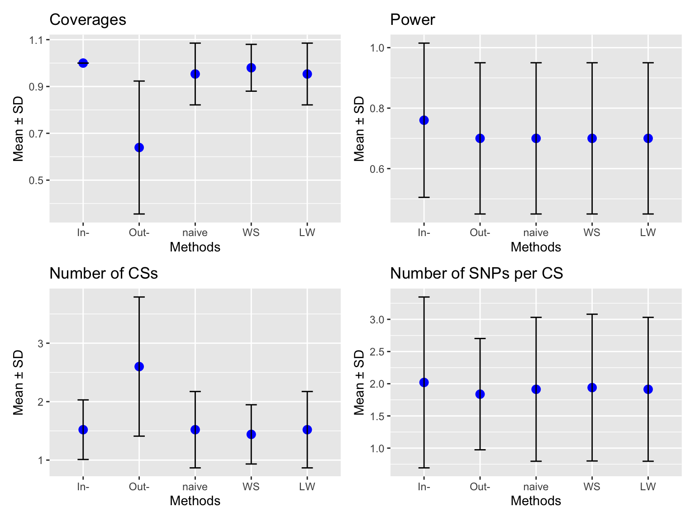

Last updated: 2026-06-04
Checks: 7 0
Knit directory: susie_love_experiments/
This reproducible R Markdown analysis was created with workflowr (version 1.7.2). The Checks tab describes the reproducibility checks that were applied when the results were created. The Past versions tab lists the development history.
Great! Since the R Markdown file has been committed to the Git repository, you know the exact version of the code that produced these results.
Great job! The global environment was empty. Objects defined in the global environment can affect the analysis in your R Markdown file in unknown ways. For reproduciblity it’s best to always run the code in an empty environment.
The command set.seed(20260419) was run prior to running
the code in the R Markdown file. Setting a seed ensures that any results
that rely on randomness, e.g. subsampling or permutations, are
reproducible.
Great job! Recording the operating system, R version, and package versions is critical for reproducibility.
Nice! There were no cached chunks for this analysis, so you can be confident that you successfully produced the results during this run.
Great job! Using relative paths to the files within your workflowr project makes it easier to run your code on other machines.
Great! You are using Git for version control. Tracking code development and connecting the code version to the results is critical for reproducibility.
The results in this page were generated with repository version 95155c1. See the Past versions tab to see a history of the changes made to the R Markdown and HTML files.
Note that you need to be careful to ensure that all relevant files for
the analysis have been committed to Git prior to generating the results
(you can use wflow_publish or
wflow_git_commit). workflowr only checks the R Markdown
file, but you know if there are other scripts or data files that it
depends on. Below is the status of the Git repository when the results
were generated:
Ignored files:
Ignored: .DS_Store
Ignored: .Rhistory
Ignored: .Rproj.user/
Untracked files:
Untracked: analysis/test.Rmd
Note that any generated files, e.g. HTML, png, CSS, etc., are not included in this status report because it is ok for generated content to have uncommitted changes.
These are the previous versions of the repository in which changes were
made to the R Markdown
(analysis/systematic-compare-shrinkage-methods.Rmd) and
HTML (docs/systematic-compare-shrinkage-methods.html)
files. If you’ve configured a remote Git repository (see
?wflow_git_remote), click on the hyperlinks in the table
below to view the files as they were in that past version.
| File | Version | Author | Date | Message |
|---|---|---|---|---|
| Rmd | 95155c1 | dodat-stats | 2026-06-04 | Add systematic shrinkage comparison and |
In this workflow file, we will compare the three shrinkage method for
the out-of-sample population correlation matrix \(\Psi_0\) more systematically (by comparing
their corresponding susie_love_lambda result). Recall that
we had 3 ways (naive, Wen and Stephens, and Ledoit and Wolf) to choose
\(\lambda\) in \[\Psi_0 = (1 - \lambda) R_0 + \lambda I, \]
and then in susie-love we model \[R | \nu_0
\sim \mathcal{IW}(\nu_0 \Psi_0, \nu_0 + J + 1).\] (I will replace
\(\nu_0\) by \(\eta_0\) when we revise the manuscript.)
The reasons we are doing this are:
First reason (phylosophical reason): De-couple the roles of \(\lambda\) and \(\nu_0\):
Now \(\lambda\) only helps the out-of-sample \(R_0\) to become \(\Psi_0\), the population version with better condition number (no more rank-deficient). \(\lambda\) does not serve the role of quantifying the LD mismatch anymore [Therefore its role is now different from what was discussed in Zou et al. (2022)].
After obtaining \(\Psi_0\), now \(\nu_0\) has only one job which focuses on quantifying the LD mismatch between \(R\) and \(\Psi_0\).
Second reason (technical): Jointly learning \(\lambda\) (and also \(\delta\) in the other version) inside susie_love is hard… Because we jointly model \(R\) using the Inverse-Wishart. The log-det term in the log-likelihood really prefers matrices with moderate-large eigenvalues, increasing \(\lambda\) to be higher than we want. Therefore I decided to just fix \(\lambda\) in the beginning and only care about \(\nu_0\). Luckily, there are principal ways to find \(\lambda\) in the literature, such as in Leidoit and Wolf (2004) where they aim to minimize the Frobenius norm loss between the sample covariance matrix and population version (they a 2020 review paper that explains this clearly and enjoy it a lot), or in Wen and Stephens (2010) where they introduced a shrinkage estimate motivated from Li and Stephens (2003). Note that because we are working in a local part of the genome, we can ignore the recombination rate \(\exp(-\rho / d_{ij})\) factor.
Recall 3 shrinkage (choosing \(\lambda\)) rules:
Naive shrinkage: \(\Psi_{naive} = \left(1-\dfrac{1}{N_0}) R_0 + \dfrac{1}{N_0} I\)
Wen and Stephens (2010) shrinkage: \(\Psi_{WS} = \left(1- \lambda)^2 R_0 + (1 - (1-\lambda)^2) I\), where \(\lambda = \dfrac{\theta}{\theta + 2 N_0}\) and \(\theta\) is the Watterson’s estimator $= (_{i=1}^{2N_0 - 1} )^{-1} ((2N_0) + 0.57)^{-1} $.
Ledoit and Wolf (2004) linear shrinkage: \(\Psi_{linear-LW} = \left(1- \lambda) R_0 + \lambda I\), where \(\lambda \asymp \dfrac{1}{N_0}\).
compute_wen_stephens <- function(R_0, N_ref) {
# Number of haplotypes (diploid population)
d <- 2 * N_ref
# Calculate Watterson's estimator constant (Harmonic sum)
harmonic_sum <- sum(1 / (1:(d - 1)))
theta <- 1 / harmonic_sum
# Calculate the exact mutation shrinkage parameter lambda
lambda <- theta / (theta + 2 * N_ref)
# Apply local uniform shrinkage: Psi = (1-lambda)^2 * R_0 + (1 - (1-lambda)^2) * I
p <- ncol(R_0)
R_ws <- (1 - lambda)^2 * R_0 + (1 - (1 - lambda)^2) * diag(p)
return(R_ws)
}
compute_lw_linear_from_R0 <- function(R_0, N_ref) {
p <- ncol(R_0)
# 1. Sum of the squared off-diagonal elements of R_0
# (This is the Frobenius norm of the off-diagonals)
sum_sq_off_diag <- sum(R_0^2) - p
# 2. Estimate the sampling variance (noise) parameter under normality
# In correlation space, the sum of variances of r_ij is approximated by:
beta_sq <- (1 / N_ref) * (p + sum_sq_off_diag)
# 3. Calculate the distance to the identity target matrix
# Since diag(R_0) is all 1s and diag(I) is all 1s, the distance is just
# the sum of the squared off-diagonal elements.
delta_sq <- sum_sq_off_diag
# 4. Compute the optimal shrinkage intensity alpha
# Guard against division by zero if R_0 is already the identity matrix
if (delta_sq == 0) {
alpha <- 1
} else {
alpha <- min(1, beta_sq / delta_sq)
}
# 5. Construct the shrunk matrix: alpha * I + (1 - alpha) * R_0
R_lw_linear <- (1 - alpha) * R_0 + alpha * diag(p)
# Print the learned alpha for transparency
cat("Ledoit-Wolf Linear Alpha estimated from R_0:", alpha, "\n")
return(R_lw_linear)
}
See the end of the result.
library(susielove)
library(susieR)
num_reps = 25
coverages = matrix(0, nrow = num_reps, ncol = 5)
powers = matrix(0, nrow = num_reps, ncol = 5)
no_CSs = matrix(0, nrow = num_reps, ncol = 5)
no_SNPs_CS = matrix(0, nrow = num_reps, ncol = 5)
dist_R = matrix(0, nrow = num_reps, ncol = 4)
T_split <- 25
chrom <- "chr22"
start <- 20e6
end <- 21e6
N <- 25000L
N0 <- 200L
J <- 1000L
h2 <- 0.01
for (seed in c(1:num_reps)){
print(paste0("Seed ", seed))
res <- sim_2pop(chrom, start, end,
T_split = T_split,
n_gwas = N,
n_ref = N0,
J = J,
h2 = h2,
seed = seed)
v <- res$v
R <- res$R
R0 <- res$R0
beta_true <- res$beta_true
causal_SNPs_loc <- res$causal_SNPs_loc
## standardized
d = 1 / sqrt(diag(R))
v = d * v
R = cov2cor(R)
R0 = cov2cor(R0)
## 1. in-sample LD
fit <- susie_suff_stat(
XtX = N * R,
Xty = N * v,
n = N,
yty = N
)
## 2. Out-of-sample LD
fit_R0 <- susie_suff_stat(
XtX = N * R0,
Xty = N * v,
n = N,
yty = N,
L = 5
)
## 3. Naive shrinkage
lambda <- 1 / (N0 + 1)
diag_R <- diag(R)
R_out <- R0
k <- min(N0, J)
love_res <- susie_love_lambda(v, R_out, diag_R,
lambda,
N, L = 5,
k,
nu_delta_init = 1000,
step_susie = 20,
step_R = 30,
step_nu = 10,
max_iter = 30,
tol = 1e-4)
## 4. WS shrinkage
diag_R <- diag(R)
R_out <- compute_wen_stephens(R_0 = R0, N_ref = N0)
k <- min(N0, J)
love_res_WS <- susie_love_lambda(v, R_out, diag_R,
lambda = 0,
N, L = 5,
k,
nu_delta_init = 1000,
step_susie = 20,
step_R = 30,
step_nu = 10,
max_iter = 30,
tol = 1e-4)
## 5. LW shrinkage
diag_R <- diag(R)
R_out <- compute_lw_linear_from_R0(R0, N0)
k <- min(N0, J)
love_res_LW_linear <- susie_love_lambda(v, R_out, diag_R,
lambda = 0,
N, L = 5,
k,
nu_delta_init = 1000,
step_susie = 20,
step_R = 30,
step_nu = 10,
max_iter = 30,
tol = 1e-4)
fitted_rss = list(fit,
fit_R0,
love_res,
love_res_WS,
love_res_LW_linear)
for (method in 1:5){
if (method < 3) {
summary_all_CS = summary(fitted_rss[[method]])$cs
all_CS <- lapply(summary_all_CS$variable, function(x) {
as.numeric(unlist(strsplit(x, ",")))})
} else {
all_CS = get_cs(fitted_rss[[method]]$b_res$alpha, fitted_rss[[method]]$R_q)$cs
}
L_infer = length(all_CS)
if (is.null(all_CS) || length(all_CS) == 0) {
coverages[seed, method] = 0
powers[seed, method] = 0
no_CSs[seed, method] = 0
no_SNPs_CS[seed, method] = 0
} else{
num_contains = 0
all_selected_SNPs = c()
for (ell in 1:L_infer){
this_CS = all_CS[[ell]]
all_selected_SNPs = c(all_selected_SNPs, this_CS)
num_contains = num_contains + (length(intersect(this_CS, causal_SNPs_loc)) > 0)
}
## coverage = proportion of CS that contains a true casual SNP
coverages[seed, method] = num_contains / L_infer
## power = proportion of casual SNP that is contained in a CS
selected = length(intersect(all_selected_SNPs, causal_SNPs_loc))
powers[seed, method] = selected / length(causal_SNPs_loc)
## number of CSs
no_CSs[seed, method] = L_infer
## number of SNPs per CSs
no_SNPs_CS[seed, method] = length(all_selected_SNPs) / L_infer
}
}
}
#> [1] "Seed 1"
#> Iter 1 | Loss: -2.2796 | nu_q: 858.6 | nu_delta: 856.7
#> Iter 2 | Loss: -2.3142 | nu_q: 768.8 | nu_delta: 765.6
#> Iter 3 | Loss: -2.3263 | nu_q: 716.4 | nu_delta: 712.2
#> Iter 4 | Loss: -2.3305 | nu_q: 686.7 | nu_delta: 682.0
#> Iter 5 | Loss: -2.3319 | nu_q: 671.0 | nu_delta: 665.9
#> Iter 6 | Loss: -2.3323 | nu_q: 662.8 | nu_delta: 657.7
#> Iter 7 | Loss: -2.3325 | nu_q: 657.5 | nu_delta: 652.2
#> Iter 8 | Loss: -2.3326 | nu_q: 657.5 | nu_delta: 652.2
#> Converged at iteration 8
#> Iter 1 | Loss: 6.0609 | nu_q: 284.7 | nu_delta: 285.5
#> Iter 2 | Loss: 3.3304 | nu_q: 198.4 | nu_delta: 198.1
#> Iter 3 | Loss: 2.1248 | nu_q: 198.7 | nu_delta: 198.8
#> Iter 4 | Loss: 0.2873 | nu_q: 251.2 | nu_delta: 249.4
#> Iter 5 | Loss: -1.6246 | nu_q: 313.8 | nu_delta: 311.7
#> Iter 6 | Loss: -1.7286 | nu_q: 337.0 | nu_delta: 334.5
#> Iter 7 | Loss: -1.7478 | nu_q: 355.1 | nu_delta: 351.9
#> Iter 8 | Loss: -1.7536 | nu_q: 357.2 | nu_delta: 353.8
#> Iter 9 | Loss: -1.7564 | nu_q: 361.7 | nu_delta: 358.0
#> Iter 10 | Loss: -1.7579 | nu_q: 363.3 | nu_delta: 359.3
#> Iter 11 | Loss: -1.7588 | nu_q: 364.9 | nu_delta: 360.7
#> Iter 12 | Loss: -1.7593 | nu_q: 365.5 | nu_delta: 361.2
#> Iter 13 | Loss: -1.7594 | nu_q: 365.5 | nu_delta: 361.2
#> Converged at iteration 13
#> Ledoit-Wolf Linear Alpha estimated from R_0: 0.005219331
#> Iter 1 | Loss: -2.3068 | nu_q: 851.3 | nu_delta: 849.4
#> Iter 2 | Loss: -2.3352 | nu_q: 772.6 | nu_delta: 769.1
#> Iter 3 | Loss: -2.3438 | nu_q: 727.4 | nu_delta: 723.2
#> Iter 4 | Loss: -2.3472 | nu_q: 701.2 | nu_delta: 696.4
#> Iter 5 | Loss: -2.3484 | nu_q: 686.4 | nu_delta: 681.3
#> Iter 6 | Loss: -2.3487 | nu_q: 678.6 | nu_delta: 673.5
#> Iter 7 | Loss: -2.3488 | nu_q: 678.6 | nu_delta: 673.5
#> Converged at iteration 7
#> [1] "Seed 2"
#> Iter 1 | Loss: -2.0094 | nu_q: 800.2 | nu_delta: 798.0
#> Iter 2 | Loss: -2.0583 | nu_q: 702.9 | nu_delta: 699.1
#> Iter 3 | Loss: -2.0720 | nu_q: 653.9 | nu_delta: 649.4
#> Iter 4 | Loss: -2.0765 | nu_q: 629.5 | nu_delta: 624.5
#> Iter 5 | Loss: -2.0776 | nu_q: 618.0 | nu_delta: 612.7
#> Iter 6 | Loss: -2.0778 | nu_q: 613.6 | nu_delta: 608.3
#> Iter 7 | Loss: -2.0779 | nu_q: 609.9 | nu_delta: 604.4
#> Iter 8 | Loss: -2.0779 | nu_q: 609.9 | nu_delta: 604.4
#> Converged at iteration 8
#> Iter 1 | Loss: 11.7532 | nu_q: 257.1 | nu_delta: 255.3
#> Iter 2 | Loss: 6.8767 | nu_q: 169.4 | nu_delta: 168.8
#> Iter 3 | Loss: 4.2966 | nu_q: 191.4 | nu_delta: 190.5
#> Iter 4 | Loss: 2.5849 | nu_q: 215.6 | nu_delta: 214.3
#> Iter 5 | Loss: 0.5592 | nu_q: 254.1 | nu_delta: 252.3
#> Iter 6 | Loss: -0.0672 | nu_q: 289.6 | nu_delta: 287.3
#> Iter 7 | Loss: -1.2433 | nu_q: 323.9 | nu_delta: 320.9
#> Iter 8 | Loss: -1.4671 | nu_q: 355.4 | nu_delta: 352.0
#> Iter 9 | Loss: -1.4787 | nu_q: 367.8 | nu_delta: 364.0
#> Iter 10 | Loss: -1.4833 | nu_q: 374.1 | nu_delta: 369.9
#> Iter 11 | Loss: -1.4849 | nu_q: 375.2 | nu_delta: 370.7
#> Iter 12 | Loss: -1.4860 | nu_q: 374.9 | nu_delta: 370.3
#> Iter 13 | Loss: -1.4867 | nu_q: 375.9 | nu_delta: 371.1
#> Iter 14 | Loss: -1.4867 | nu_q: 375.9 | nu_delta: 371.1
#> Converged at iteration 14
#> Ledoit-Wolf Linear Alpha estimated from R_0: 0.005250255
#> Iter 1 | Loss: -2.0341 | nu_q: 810.2 | nu_delta: 808.1
#> Iter 2 | Loss: -2.0790 | nu_q: 714.9 | nu_delta: 711.3
#> Iter 3 | Loss: -2.0910 | nu_q: 669.0 | nu_delta: 664.7
#> Iter 4 | Loss: -2.0956 | nu_q: 643.4 | nu_delta: 638.5
#> Iter 5 | Loss: -2.0965 | nu_q: 631.6 | nu_delta: 626.5
#> Iter 6 | Loss: -2.0971 | nu_q: 625.3 | nu_delta: 619.9
#> Iter 7 | Loss: -2.0972 | nu_q: 621.4 | nu_delta: 616.0
#> Iter 8 | Loss: -2.0972 | nu_q: 621.4 | nu_delta: 616.0
#> Converged at iteration 8
#> [1] "Seed 3"
#> Iter 1 | Loss: -1.9173 | nu_q: 764.8 | nu_delta: 763.0
#> Iter 2 | Loss: -1.9842 | nu_q: 645.9 | nu_delta: 643.0
#> Iter 3 | Loss: -2.0037 | nu_q: 587.5 | nu_delta: 584.0
#> Iter 4 | Loss: -2.0100 | nu_q: 556.9 | nu_delta: 553.0
#> Iter 5 | Loss: -2.0121 | nu_q: 540.5 | nu_delta: 536.2
#> Iter 6 | Loss: -2.0126 | nu_q: 532.8 | nu_delta: 528.5
#> Iter 7 | Loss: -2.0127 | nu_q: 530.2 | nu_delta: 525.9
#> Converged at iteration 7
#> Iter 1 | Loss: 4.1140 | nu_q: 344.0 | nu_delta: 350.3
#> Iter 2 | Loss: 0.7589 | nu_q: 252.0 | nu_delta: 256.2
#> Iter 3 | Loss: -0.5450 | nu_q: 277.6 | nu_delta: 280.2
#> Iter 4 | Loss: -1.4052 | nu_q: 292.9 | nu_delta: 295.4
#> Iter 5 | Loss: -1.4514 | nu_q: 305.4 | nu_delta: 306.8
#> Iter 6 | Loss: -1.4618 | nu_q: 311.3 | nu_delta: 312.0
#> Iter 7 | Loss: -1.4668 | nu_q: 314.2 | nu_delta: 314.2
#> Iter 8 | Loss: -1.4702 | nu_q: 316.0 | nu_delta: 315.4
#> Iter 9 | Loss: -1.4724 | nu_q: 316.9 | nu_delta: 315.7
#> Iter 10 | Loss: -1.4741 | nu_q: 317.2 | nu_delta: 315.5
#> Iter 11 | Loss: -1.4754 | nu_q: 317.4 | nu_delta: 315.3
#> Iter 12 | Loss: -1.4754 | nu_q: 317.4 | nu_delta: 315.3
#> Converged at iteration 12
#> Ledoit-Wolf Linear Alpha estimated from R_0: 0.005246916
#> Iter 1 | Loss: -1.9402 | nu_q: 771.6 | nu_delta: 769.9
#> Iter 2 | Loss: -2.0035 | nu_q: 655.3 | nu_delta: 652.4
#> Iter 3 | Loss: -2.0215 | nu_q: 599.2 | nu_delta: 595.7
#> Iter 4 | Loss: -2.0274 | nu_q: 569.1 | nu_delta: 565.2
#> Iter 5 | Loss: -2.0291 | nu_q: 553.5 | nu_delta: 549.4
#> Iter 6 | Loss: -2.0297 | nu_q: 545.0 | nu_delta: 540.7
#> Iter 7 | Loss: -2.0303 | nu_q: 539.7 | nu_delta: 535.1
#> Iter 8 | Loss: -2.0304 | nu_q: 537.2 | nu_delta: 532.7
#> Converged at iteration 8
#> [1] "Seed 4"
#> Iter 1 | Loss: -1.5533 | nu_q: 728.4 | nu_delta: 726.6
#> Iter 2 | Loss: -1.6557 | nu_q: 602.9 | nu_delta: 599.7
#> Iter 3 | Loss: -1.6866 | nu_q: 542.1 | nu_delta: 538.2
#> Iter 4 | Loss: -1.6955 | nu_q: 514.4 | nu_delta: 509.9
#> Iter 5 | Loss: -1.6982 | nu_q: 501.7 | nu_delta: 496.8
#> Iter 6 | Loss: -1.6991 | nu_q: 495.8 | nu_delta: 490.5
#> Iter 7 | Loss: -1.6992 | nu_q: 493.5 | nu_delta: 488.1
#> Iter 8 | Loss: -1.6992 | nu_q: 493.5 | nu_delta: 488.1
#> Converged at iteration 8
#> Iter 1 | Loss: 5.8191 | nu_q: 320.8 | nu_delta: 320.7
#> Iter 2 | Loss: 1.5328 | nu_q: 297.7 | nu_delta: 297.2
#> Iter 3 | Loss: -0.9399 | nu_q: 318.3 | nu_delta: 317.5
#> Iter 4 | Loss: -1.0956 | nu_q: 349.6 | nu_delta: 348.2
#> Iter 5 | Loss: -1.1299 | nu_q: 341.4 | nu_delta: 339.6
#> Iter 6 | Loss: -1.1433 | nu_q: 344.8 | nu_delta: 342.6
#> Iter 7 | Loss: -1.1579 | nu_q: 337.9 | nu_delta: 334.7
#> Iter 8 | Loss: -1.1627 | nu_q: 337.3 | nu_delta: 333.8
#> Iter 9 | Loss: -1.1659 | nu_q: 333.9 | nu_delta: 330.1
#> Iter 10 | Loss: -1.1679 | nu_q: 332.8 | nu_delta: 328.7
#> Iter 11 | Loss: -1.1696 | nu_q: 330.9 | nu_delta: 326.6
#> Iter 12 | Loss: -1.1710 | nu_q: 329.6 | nu_delta: 325.0
#> Iter 13 | Loss: -1.1721 | nu_q: 328.2 | nu_delta: 323.4
#> Iter 14 | Loss: -1.1729 | nu_q: 327.4 | nu_delta: 322.5
#> Iter 15 | Loss: -1.1733 | nu_q: 326.8 | nu_delta: 321.8
#> Iter 16 | Loss: -1.1734 | nu_q: 326.8 | nu_delta: 321.8
#> Converged at iteration 16
#> Ledoit-Wolf Linear Alpha estimated from R_0: 0.005242546
#> Iter 1 | Loss: -1.5743 | nu_q: 732.7 | nu_delta: 731.0
#> Iter 2 | Loss: -1.6743 | nu_q: 609.0 | nu_delta: 605.9
#> Iter 3 | Loss: -1.7029 | nu_q: 551.2 | nu_delta: 547.3
#> Iter 4 | Loss: -1.7117 | nu_q: 522.9 | nu_delta: 518.5
#> Iter 5 | Loss: -1.7144 | nu_q: 508.8 | nu_delta: 503.9
#> Iter 6 | Loss: -1.7149 | nu_q: 504.4 | nu_delta: 499.4
#> Iter 7 | Loss: -1.7153 | nu_q: 501.4 | nu_delta: 496.0
#> Iter 8 | Loss: -1.7155 | nu_q: 499.5 | nu_delta: 493.8
#> Iter 9 | Loss: -1.7155 | nu_q: 499.5 | nu_delta: 493.8
#> Converged at iteration 9
#> [1] "Seed 5"
#> Iter 1 | Loss: -2.0981 | nu_q: 809.7 | nu_delta: 808.0
#> Iter 2 | Loss: -2.1421 | nu_q: 706.7 | nu_delta: 703.5
#> Iter 3 | Loss: -2.1559 | nu_q: 653.4 | nu_delta: 649.5
#> Iter 4 | Loss: -2.1604 | nu_q: 626.0 | nu_delta: 621.5
#> Iter 5 | Loss: -2.1618 | nu_q: 611.2 | nu_delta: 606.3
#> Iter 6 | Loss: -2.1625 | nu_q: 603.2 | nu_delta: 598.0
#> Iter 7 | Loss: -2.1626 | nu_q: 599.6 | nu_delta: 594.5
#> Iter 8 | Loss: -2.1626 | nu_q: 599.6 | nu_delta: 594.5
#> Converged at iteration 8
#> Iter 1 | Loss: 7.1085 | nu_q: 281.1 | nu_delta: 288.9
#> Iter 2 | Loss: 1.7203 | nu_q: 230.6 | nu_delta: 237.9
#> Iter 3 | Loss: 0.0362 | nu_q: 255.0 | nu_delta: 262.3
#> Iter 4 | Loss: -1.4635 | nu_q: 314.3 | nu_delta: 322.1
#> Iter 5 | Loss: -1.5242 | nu_q: 341.1 | nu_delta: 348.1
#> Iter 6 | Loss: -1.5460 | nu_q: 344.0 | nu_delta: 349.4
#> Iter 7 | Loss: -1.5606 | nu_q: 348.4 | nu_delta: 352.2
#> Iter 8 | Loss: -1.5695 | nu_q: 349.0 | nu_delta: 351.6
#> Iter 9 | Loss: -1.5768 | nu_q: 350.2 | nu_delta: 351.4
#> Iter 10 | Loss: -1.5815 | nu_q: 350.1 | nu_delta: 350.3
#> Iter 11 | Loss: -1.5847 | nu_q: 350.5 | nu_delta: 349.9
#> Iter 12 | Loss: -1.5870 | nu_q: 350.8 | nu_delta: 349.6
#> Iter 13 | Loss: -1.5890 | nu_q: 351.1 | nu_delta: 349.3
#> Iter 14 | Loss: -1.5908 | nu_q: 350.5 | nu_delta: 348.0
#> Iter 15 | Loss: -1.5917 | nu_q: 350.2 | nu_delta: 347.4
#> Iter 16 | Loss: -1.5924 | nu_q: 349.9 | nu_delta: 346.8
#> Iter 17 | Loss: -1.5924 | nu_q: 349.9 | nu_delta: 346.8
#> Converged at iteration 17
#> Ledoit-Wolf Linear Alpha estimated from R_0: 0.005244973
#> Iter 1 | Loss: -2.1228 | nu_q: 818.8 | nu_delta: 817.0
#> Iter 2 | Loss: -2.1627 | nu_q: 718.9 | nu_delta: 715.6
#> Iter 3 | Loss: -2.1748 | nu_q: 668.7 | nu_delta: 664.6
#> Iter 4 | Loss: -2.1791 | nu_q: 641.5 | nu_delta: 636.9
#> Iter 5 | Loss: -2.1803 | nu_q: 626.2 | nu_delta: 621.5
#> Iter 6 | Loss: -2.1805 | nu_q: 620.8 | nu_delta: 616.0
#> Iter 7 | Loss: -2.1811 | nu_q: 614.5 | nu_delta: 609.4
#> Iter 8 | Loss: -2.1813 | nu_q: 611.9 | nu_delta: 606.8
#> Iter 9 | Loss: -2.1813 | nu_q: 609.8 | nu_delta: 604.6
#> Converged at iteration 9
#> [1] "Seed 6"
#> Iter 1 | Loss: -1.7094 | nu_q: 748.5 | nu_delta: 746.7
#> Iter 2 | Loss: -1.7980 | nu_q: 615.2 | nu_delta: 612.4
#> Iter 3 | Loss: -1.8264 | nu_q: 552.5 | nu_delta: 549.1
#> Iter 4 | Loss: -1.8355 | nu_q: 519.8 | nu_delta: 516.0
#> Iter 5 | Loss: -1.8390 | nu_q: 502.5 | nu_delta: 498.3
#> Iter 6 | Loss: -1.8397 | nu_q: 494.4 | nu_delta: 490.0
#> Iter 7 | Loss: -1.8400 | nu_q: 490.3 | nu_delta: 485.7
#> Iter 8 | Loss: -1.8401 | nu_q: 490.3 | nu_delta: 485.7
#> Converged at iteration 8
#> Iter 1 | Loss: 2.8384 | nu_q: 333.5 | nu_delta: 330.6
#> Iter 2 | Loss: -0.8707 | nu_q: 334.1 | nu_delta: 331.2
#> Iter 3 | Loss: -1.2068 | nu_q: 352.6 | nu_delta: 349.6
#> Iter 4 | Loss: -1.2752 | nu_q: 329.7 | nu_delta: 326.9
#> Iter 5 | Loss: -1.2959 | nu_q: 329.4 | nu_delta: 326.2
#> Iter 6 | Loss: -1.3056 | nu_q: 321.7 | nu_delta: 318.5
#> Iter 7 | Loss: -1.3113 | nu_q: 319.2 | nu_delta: 315.6
#> Iter 8 | Loss: -1.3144 | nu_q: 316.4 | nu_delta: 312.6
#> Iter 9 | Loss: -1.3161 | nu_q: 315.5 | nu_delta: 311.5
#> Iter 10 | Loss: -1.3165 | nu_q: 315.2 | nu_delta: 311.2
#> Iter 11 | Loss: -1.3166 | nu_q: 315.2 | nu_delta: 311.2
#> Converged at iteration 11
#> Ledoit-Wolf Linear Alpha estimated from R_0: 0.005251042
#> Iter 1 | Loss: -1.7372 | nu_q: 751.4 | nu_delta: 749.6
#> Iter 2 | Loss: -1.8179 | nu_q: 622.8 | nu_delta: 620.0
#> Iter 3 | Loss: -1.8447 | nu_q: 559.9 | nu_delta: 556.5
#> Iter 4 | Loss: -1.8529 | nu_q: 528.3 | nu_delta: 524.4
#> Iter 5 | Loss: -1.8559 | nu_q: 511.5 | nu_delta: 507.2
#> Iter 6 | Loss: -1.8566 | nu_q: 503.3 | nu_delta: 498.9
#> Iter 7 | Loss: -1.8569 | nu_q: 499.3 | nu_delta: 494.6
#> Iter 8 | Loss: -1.8570 | nu_q: 498.1 | nu_delta: 493.3
#> Converged at iteration 8
#> [1] "Seed 7"
#> Iter 1 | Loss: -1.7863 | nu_q: 747.1 | nu_delta: 745.4
#> Iter 2 | Loss: -1.8586 | nu_q: 632.7 | nu_delta: 629.5
#> Iter 3 | Loss: -1.8788 | nu_q: 581.8 | nu_delta: 577.8
#> Iter 4 | Loss: -1.8849 | nu_q: 556.6 | nu_delta: 552.1
#> Iter 5 | Loss: -1.8869 | nu_q: 544.3 | nu_delta: 539.5
#> Iter 6 | Loss: -1.8874 | nu_q: 538.7 | nu_delta: 533.9
#> Iter 7 | Loss: -1.8874 | nu_q: 537.3 | nu_delta: 532.4
#> Converged at iteration 7
#> Iter 1 | Loss: 5.5839 | nu_q: 289.1 | nu_delta: 291.8
#> Iter 2 | Loss: 1.4684 | nu_q: 248.5 | nu_delta: 250.6
#> Iter 3 | Loss: 0.1490 | nu_q: 286.2 | nu_delta: 288.3
#> Iter 4 | Loss: -1.2221 | nu_q: 348.1 | nu_delta: 349.8
#> Iter 5 | Loss: -1.2779 | nu_q: 361.7 | nu_delta: 362.3
#> Iter 6 | Loss: -1.2933 | nu_q: 356.6 | nu_delta: 356.5
#> Iter 7 | Loss: -1.3033 | nu_q: 354.8 | nu_delta: 353.8
#> Iter 8 | Loss: -1.3086 | nu_q: 353.4 | nu_delta: 351.9
#> Iter 9 | Loss: -1.3135 | nu_q: 351.0 | nu_delta: 348.7
#> Iter 10 | Loss: -1.3161 | nu_q: 350.0 | nu_delta: 347.3
#> Iter 11 | Loss: -1.3179 | nu_q: 348.9 | nu_delta: 345.9
#> Iter 12 | Loss: -1.3196 | nu_q: 348.0 | nu_delta: 344.5
#> Iter 13 | Loss: -1.3209 | nu_q: 346.9 | nu_delta: 343.1
#> Iter 14 | Loss: -1.3219 | nu_q: 346.2 | nu_delta: 342.1
#> Iter 15 | Loss: -1.3222 | nu_q: 346.1 | nu_delta: 341.9
#> Iter 16 | Loss: -1.3222 | nu_q: 346.1 | nu_delta: 341.9
#> Converged at iteration 16
#> Ledoit-Wolf Linear Alpha estimated from R_0: 0.00525851
#> Iter 1 | Loss: -1.8064 | nu_q: 765.0 | nu_delta: 763.2
#> Iter 2 | Loss: -1.8764 | nu_q: 650.3 | nu_delta: 647.1
#> Iter 3 | Loss: -1.8976 | nu_q: 593.0 | nu_delta: 589.0
#> Iter 4 | Loss: -1.9037 | nu_q: 568.2 | nu_delta: 563.7
#> Iter 5 | Loss: -1.9057 | nu_q: 553.8 | nu_delta: 549.0
#> Iter 6 | Loss: -1.9061 | nu_q: 548.1 | nu_delta: 543.1
#> Iter 7 | Loss: -1.9065 | nu_q: 544.0 | nu_delta: 538.9
#> Iter 8 | Loss: -1.9066 | nu_q: 544.0 | nu_delta: 538.9
#> Converged at iteration 8
#> [1] "Seed 8"
#> Iter 1 | Loss: -2.0037 | nu_q: 781.1 | nu_delta: 779.3
#> Iter 2 | Loss: -2.0575 | nu_q: 668.9 | nu_delta: 665.9
#> Iter 3 | Loss: -2.0747 | nu_q: 611.5 | nu_delta: 607.9
#> Iter 4 | Loss: -2.0808 | nu_q: 579.7 | nu_delta: 575.7
#> Iter 5 | Loss: -2.0828 | nu_q: 563.1 | nu_delta: 558.8
#> Iter 6 | Loss: -2.0834 | nu_q: 554.4 | nu_delta: 550.1
#> Iter 7 | Loss: -2.0835 | nu_q: 551.2 | nu_delta: 546.8
#> Iter 8 | Loss: -2.0837 | nu_q: 548.0 | nu_delta: 543.4
#> Iter 9 | Loss: -2.0837 | nu_q: 548.0 | nu_delta: 543.4
#> Converged at iteration 9
#> Iter 1 | Loss: 3.8279 | nu_q: 334.0 | nu_delta: 347.8
#> Iter 2 | Loss: -0.0958 | nu_q: 242.9 | nu_delta: 252.3
#> Iter 3 | Loss: -1.2810 | nu_q: 289.3 | nu_delta: 299.5
#> Iter 4 | Loss: -1.4256 | nu_q: 322.7 | nu_delta: 332.3
#> Iter 5 | Loss: -1.4674 | nu_q: 312.7 | nu_delta: 320.0
#> Iter 6 | Loss: -1.4888 | nu_q: 319.2 | nu_delta: 325.1
#> Iter 7 | Loss: -1.5032 | nu_q: 318.1 | nu_delta: 322.6
#> Iter 8 | Loss: -1.5125 | nu_q: 320.6 | nu_delta: 323.8
#> Iter 9 | Loss: -1.5197 | nu_q: 320.1 | nu_delta: 322.2
#> Iter 10 | Loss: -1.5246 | nu_q: 321.3 | nu_delta: 322.4
#> Iter 11 | Loss: -1.5282 | nu_q: 320.9 | nu_delta: 321.3
#> Iter 12 | Loss: -1.5310 | nu_q: 321.3 | nu_delta: 321.0
#> Iter 13 | Loss: -1.5333 | nu_q: 321.1 | nu_delta: 320.1
#> Iter 14 | Loss: -1.5348 | nu_q: 321.4 | nu_delta: 319.9
#> Iter 15 | Loss: -1.5360 | nu_q: 321.6 | nu_delta: 319.6
#> Iter 16 | Loss: -1.5361 | nu_q: 321.2 | nu_delta: 319.2
#> Converged at iteration 16
#> Ledoit-Wolf Linear Alpha estimated from R_0: 0.005257043
#> Iter 1 | Loss: -2.0280 | nu_q: 791.7 | nu_delta: 790.1
#> Iter 2 | Loss: -2.0775 | nu_q: 682.9 | nu_delta: 680.0
#> Iter 3 | Loss: -2.0940 | nu_q: 624.4 | nu_delta: 620.9
#> Iter 4 | Loss: -2.0996 | nu_q: 592.7 | nu_delta: 588.8
#> Iter 5 | Loss: -2.1013 | nu_q: 576.7 | nu_delta: 572.5
#> Iter 6 | Loss: -2.1019 | nu_q: 567.7 | nu_delta: 563.3
#> Iter 7 | Loss: -2.1021 | nu_q: 564.3 | nu_delta: 559.9
#> Iter 8 | Loss: -2.1023 | nu_q: 560.8 | nu_delta: 556.1
#> Iter 9 | Loss: -2.1023 | nu_q: 560.8 | nu_delta: 556.1
#> Converged at iteration 9
#> [1] "Seed 9"
#> Iter 1 | Loss: -1.8792 | nu_q: 762.1 | nu_delta: 760.3
#> Iter 2 | Loss: -1.9534 | nu_q: 639.4 | nu_delta: 636.6
#> Iter 3 | Loss: -1.9767 | nu_q: 576.6 | nu_delta: 573.2
#> Iter 4 | Loss: -1.9843 | nu_q: 543.4 | nu_delta: 539.5
#> Iter 5 | Loss: -1.9868 | nu_q: 526.1 | nu_delta: 521.8
#> Iter 6 | Loss: -1.9874 | nu_q: 518.2 | nu_delta: 513.7
#> Iter 7 | Loss: -1.9877 | nu_q: 514.0 | nu_delta: 509.3
#> Iter 8 | Loss: -1.9877 | nu_q: 512.8 | nu_delta: 508.1
#> Converged at iteration 8
#> Iter 1 | Loss: 7.6119 | nu_q: 227.5 | nu_delta: 224.9
#> Iter 2 | Loss: 5.1011 | nu_q: 152.4 | nu_delta: 150.5
#> Iter 3 | Loss: 4.2623 | nu_q: 164.4 | nu_delta: 162.6
#> Iter 4 | Loss: 2.7779 | nu_q: 166.7 | nu_delta: 164.0
#> Iter 5 | Loss: 0.5439 | nu_q: 205.9 | nu_delta: 203.0
#> Iter 6 | Loss: -0.4062 | nu_q: 230.2 | nu_delta: 226.6
#> Iter 7 | Loss: -1.4197 | nu_q: 273.9 | nu_delta: 269.6
#> Iter 8 | Loss: -1.4548 | nu_q: 292.5 | nu_delta: 287.8
#> Iter 9 | Loss: -1.4648 | nu_q: 301.8 | nu_delta: 296.9
#> Iter 10 | Loss: -1.4689 | nu_q: 305.8 | nu_delta: 300.8
#> Iter 11 | Loss: -1.4713 | nu_q: 309.3 | nu_delta: 304.3
#> Iter 12 | Loss: -1.4726 | nu_q: 310.8 | nu_delta: 305.7
#> Iter 13 | Loss: -1.4732 | nu_q: 312.2 | nu_delta: 307.1
#> Iter 14 | Loss: -1.4735 | nu_q: 312.7 | nu_delta: 307.5
#> Iter 15 | Loss: -1.4735 | nu_q: 312.7 | nu_delta: 307.5
#> Converged at iteration 15
#> Ledoit-Wolf Linear Alpha estimated from R_0: 0.005211519
#> Iter 1 | Loss: -1.8974 | nu_q: 773.3 | nu_delta: 771.5
#> Iter 2 | Loss: -1.9690 | nu_q: 649.0 | nu_delta: 646.1
#> Iter 3 | Loss: -1.9918 | nu_q: 585.2 | nu_delta: 581.6
#> Iter 4 | Loss: -1.9987 | nu_q: 552.8 | nu_delta: 548.8
#> Iter 5 | Loss: -2.0010 | nu_q: 536.2 | nu_delta: 531.9
#> Iter 6 | Loss: -2.0016 | nu_q: 527.8 | nu_delta: 523.3
#> Iter 7 | Loss: -2.0017 | nu_q: 525.0 | nu_delta: 520.5
#> Iter 8 | Loss: -2.0020 | nu_q: 521.4 | nu_delta: 516.7
#> Iter 9 | Loss: -2.0020 | nu_q: 521.4 | nu_delta: 516.7
#> Converged at iteration 9
#> [1] "Seed 10"
#> Iter 1 | Loss: -2.0485 | nu_q: 797.3 | nu_delta: 795.5
#> Iter 2 | Loss: -2.1031 | nu_q: 692.7 | nu_delta: 689.4
#> Iter 3 | Loss: -2.1194 | nu_q: 635.7 | nu_delta: 631.7
#> Iter 4 | Loss: -2.1251 | nu_q: 604.8 | nu_delta: 600.4
#> Iter 5 | Loss: -2.1268 | nu_q: 589.6 | nu_delta: 584.9
#> Iter 6 | Loss: -2.1272 | nu_q: 582.3 | nu_delta: 577.4
#> Iter 7 | Loss: -2.1273 | nu_q: 579.1 | nu_delta: 574.2
#> Converged at iteration 7
#> Iter 1 | Loss: 10.8978 | nu_q: 247.5 | nu_delta: 253.8
#> Iter 2 | Loss: 6.7283 | nu_q: 155.3 | nu_delta: 159.3
#> Iter 3 | Loss: 2.6450 | nu_q: 223.3 | nu_delta: 228.0
#> Iter 4 | Loss: 0.1079 | nu_q: 228.0 | nu_delta: 232.5
#> Iter 5 | Loss: -1.3147 | nu_q: 315.3 | nu_delta: 319.7
#> Iter 6 | Loss: -1.5256 | nu_q: 318.7 | nu_delta: 322.7
#> Iter 7 | Loss: -1.5467 | nu_q: 333.3 | nu_delta: 335.9
#> Iter 8 | Loss: -1.5554 | nu_q: 334.8 | nu_delta: 336.2
#> Iter 9 | Loss: -1.5608 | nu_q: 337.8 | nu_delta: 338.3
#> Iter 10 | Loss: -1.5644 | nu_q: 338.1 | nu_delta: 337.9
#> Iter 11 | Loss: -1.5675 | nu_q: 339.2 | nu_delta: 338.2
#> Iter 12 | Loss: -1.5694 | nu_q: 339.5 | nu_delta: 338.0
#> Iter 13 | Loss: -1.5714 | nu_q: 339.8 | nu_delta: 337.7
#> Iter 14 | Loss: -1.5725 | nu_q: 339.5 | nu_delta: 336.9
#> Iter 15 | Loss: -1.5731 | nu_q: 339.6 | nu_delta: 336.8
#> Iter 16 | Loss: -1.5731 | nu_q: 339.6 | nu_delta: 336.8
#> Converged at iteration 16
#> Ledoit-Wolf Linear Alpha estimated from R_0: 0.005247757
#> Iter 1 | Loss: -2.0680 | nu_q: 817.7 | nu_delta: 815.7
#> Iter 2 | Loss: -2.1210 | nu_q: 710.0 | nu_delta: 706.6
#> Iter 3 | Loss: -2.1372 | nu_q: 652.5 | nu_delta: 648.5
#> Iter 4 | Loss: -2.1428 | nu_q: 620.9 | nu_delta: 616.5
#> Iter 5 | Loss: -2.1446 | nu_q: 604.1 | nu_delta: 599.3
#> Iter 6 | Loss: -2.1451 | nu_q: 596.5 | nu_delta: 591.6
#> Iter 7 | Loss: -2.1452 | nu_q: 591.3 | nu_delta: 586.3
#> Iter 8 | Loss: -2.1452 | nu_q: 591.3 | nu_delta: 586.3
#> Converged at iteration 8
#> [1] "Seed 11"
#> Iter 1 | Loss: -2.0171 | nu_q: 799.7 | nu_delta: 797.6
#> Iter 2 | Loss: -2.0727 | nu_q: 692.5 | nu_delta: 688.9
#> Iter 3 | Loss: -2.0897 | nu_q: 639.5 | nu_delta: 635.3
#> Iter 4 | Loss: -2.0949 | nu_q: 613.5 | nu_delta: 608.8
#> Iter 5 | Loss: -2.0961 | nu_q: 602.2 | nu_delta: 597.3
#> Iter 6 | Loss: -2.0964 | nu_q: 596.3 | nu_delta: 591.3
#> Iter 7 | Loss: -2.0971 | nu_q: 590.1 | nu_delta: 584.9
#> Iter 8 | Loss: -2.0972 | nu_q: 587.4 | nu_delta: 582.2
#> Iter 9 | Loss: -2.0972 | nu_q: 587.4 | nu_delta: 582.2
#> Converged at iteration 9
#> Iter 1 | Loss: 7.6646 | nu_q: 270.9 | nu_delta: 269.9
#> Iter 2 | Loss: 4.5439 | nu_q: 214.2 | nu_delta: 213.7
#> Iter 3 | Loss: 1.3644 | nu_q: 237.3 | nu_delta: 236.6
#> Iter 4 | Loss: 0.0853 | nu_q: 268.6 | nu_delta: 267.6
#> Iter 5 | Loss: -1.4002 | nu_q: 339.0 | nu_delta: 337.1
#> Iter 6 | Loss: -1.5153 | nu_q: 352.4 | nu_delta: 350.3
#> Iter 7 | Loss: -1.5265 | nu_q: 364.6 | nu_delta: 361.7
#> Iter 8 | Loss: -1.5302 | nu_q: 361.9 | nu_delta: 358.7
#> Iter 9 | Loss: -1.5324 | nu_q: 362.7 | nu_delta: 359.2
#> Iter 10 | Loss: -1.5339 | nu_q: 361.7 | nu_delta: 357.9
#> Iter 11 | Loss: -1.5351 | nu_q: 361.8 | nu_delta: 357.8
#> Iter 12 | Loss: -1.5360 | nu_q: 361.3 | nu_delta: 357.1
#> Iter 13 | Loss: -1.5368 | nu_q: 361.0 | nu_delta: 356.6
#> Iter 14 | Loss: -1.5373 | nu_q: 360.6 | nu_delta: 356.1
#> Iter 15 | Loss: -1.5373 | nu_q: 360.6 | nu_delta: 356.1
#> Converged at iteration 15
#> Ledoit-Wolf Linear Alpha estimated from R_0: 0.00524528
#> Iter 1 | Loss: -2.0415 | nu_q: 805.6 | nu_delta: 803.6
#> Iter 2 | Loss: -2.0918 | nu_q: 705.2 | nu_delta: 701.7
#> Iter 3 | Loss: -2.1074 | nu_q: 654.4 | nu_delta: 650.3
#> Iter 4 | Loss: -2.1123 | nu_q: 628.7 | nu_delta: 624.0
#> Iter 5 | Loss: -2.1137 | nu_q: 615.1 | nu_delta: 610.2
#> Iter 6 | Loss: -2.1146 | nu_q: 606.6 | nu_delta: 601.4
#> Iter 7 | Loss: -2.1147 | nu_q: 603.2 | nu_delta: 598.0
#> Iter 8 | Loss: -2.1147 | nu_q: 603.2 | nu_delta: 598.0
#> Converged at iteration 8
#> [1] "Seed 12"
#> Iter 1 | Loss: -2.1349 | nu_q: 810.9 | nu_delta: 809.2
#> Iter 2 | Loss: -2.1791 | nu_q: 705.1 | nu_delta: 701.9
#> Iter 3 | Loss: -2.1929 | nu_q: 649.5 | nu_delta: 645.8
#> Iter 4 | Loss: -2.1977 | nu_q: 619.4 | nu_delta: 615.2
#> Iter 5 | Loss: -2.1994 | nu_q: 602.5 | nu_delta: 598.0
#> Iter 6 | Loss: -2.1998 | nu_q: 594.8 | nu_delta: 590.2
#> Iter 7 | Loss: -2.1999 | nu_q: 591.5 | nu_delta: 586.9
#> Iter 8 | Loss: -2.2001 | nu_q: 587.7 | nu_delta: 582.9
#> Iter 9 | Loss: -2.2001 | nu_q: 587.7 | nu_delta: 582.9
#> Converged at iteration 9
#> Iter 1 | Loss: 3.7859 | nu_q: 361.2 | nu_delta: 370.6
#> Iter 2 | Loss: 0.1617 | nu_q: 279.9 | nu_delta: 286.4
#> Iter 3 | Loss: -1.4491 | nu_q: 318.0 | nu_delta: 324.5
#> Iter 4 | Loss: -1.5862 | nu_q: 346.2 | nu_delta: 351.4
#> Iter 5 | Loss: -1.6087 | nu_q: 335.2 | nu_delta: 339.0
#> Iter 6 | Loss: -1.6196 | nu_q: 338.8 | nu_delta: 341.5
#> Iter 7 | Loss: -1.6269 | nu_q: 336.1 | nu_delta: 337.7
#> Iter 8 | Loss: -1.6320 | nu_q: 337.4 | nu_delta: 338.1
#> Iter 9 | Loss: -1.6356 | nu_q: 336.1 | nu_delta: 335.9
#> Iter 10 | Loss: -1.6383 | nu_q: 336.4 | nu_delta: 335.6
#> Iter 11 | Loss: -1.6405 | nu_q: 335.7 | nu_delta: 334.2
#> Iter 12 | Loss: -1.6418 | nu_q: 335.9 | nu_delta: 334.0
#> Iter 13 | Loss: -1.6430 | nu_q: 335.4 | nu_delta: 333.0
#> Iter 14 | Loss: -1.6436 | nu_q: 335.5 | nu_delta: 332.8
#> Iter 15 | Loss: -1.6444 | nu_q: 335.1 | nu_delta: 332.0
#> Iter 16 | Loss: -1.6444 | nu_q: 335.1 | nu_delta: 332.0
#> Converged at iteration 16
#> Ledoit-Wolf Linear Alpha estimated from R_0: 0.005243781
#> Iter 1 | Loss: -2.1594 | nu_q: 817.5 | nu_delta: 815.9
#> Iter 2 | Loss: -2.1985 | nu_q: 719.1 | nu_delta: 716.2
#> Iter 3 | Loss: -2.2114 | nu_q: 663.9 | nu_delta: 660.3
#> Iter 4 | Loss: -2.2160 | nu_q: 633.9 | nu_delta: 629.8
#> Iter 5 | Loss: -2.2176 | nu_q: 617.3 | nu_delta: 612.8
#> Iter 6 | Loss: -2.2180 | nu_q: 609.3 | nu_delta: 604.7
#> Iter 7 | Loss: -2.2181 | nu_q: 605.8 | nu_delta: 601.2
#> Iter 8 | Loss: -2.2182 | nu_q: 601.9 | nu_delta: 597.2
#> Iter 9 | Loss: -2.2182 | nu_q: 601.9 | nu_delta: 597.2
#> Converged at iteration 9
#> [1] "Seed 13"
#> Iter 1 | Loss: -2.2058 | nu_q: 823.8 | nu_delta: 822.0
#> Iter 2 | Loss: -2.2424 | nu_q: 728.9 | nu_delta: 725.6
#> Iter 3 | Loss: -2.2540 | nu_q: 675.9 | nu_delta: 672.1
#> Iter 4 | Loss: -2.2583 | nu_q: 646.3 | nu_delta: 642.1
#> Iter 5 | Loss: -2.2595 | nu_q: 631.2 | nu_delta: 626.8
#> Iter 6 | Loss: -2.2603 | nu_q: 619.9 | nu_delta: 615.2
#> Iter 7 | Loss: -2.2605 | nu_q: 614.9 | nu_delta: 610.2
#> Iter 8 | Loss: -2.2605 | nu_q: 614.9 | nu_delta: 610.2
#> Converged at iteration 8
#> Iter 1 | Loss: 4.7077 | nu_q: 299.5 | nu_delta: 309.0
#> Iter 2 | Loss: 0.1641 | nu_q: 272.0 | nu_delta: 280.8
#> Iter 3 | Loss: -1.4204 | nu_q: 326.8 | nu_delta: 336.7
#> Iter 4 | Loss: -1.6030 | nu_q: 341.5 | nu_delta: 349.4
#> Iter 5 | Loss: -1.6355 | nu_q: 337.8 | nu_delta: 343.8
#> Iter 6 | Loss: -1.6533 | nu_q: 345.4 | nu_delta: 350.0
#> Iter 7 | Loss: -1.6642 | nu_q: 342.0 | nu_delta: 345.2
#> Iter 8 | Loss: -1.6725 | nu_q: 344.6 | nu_delta: 346.5
#> Iter 9 | Loss: -1.6778 | nu_q: 342.4 | nu_delta: 343.3
#> Iter 10 | Loss: -1.6818 | nu_q: 343.4 | nu_delta: 343.4
#> Iter 11 | Loss: -1.6846 | nu_q: 341.9 | nu_delta: 341.2
#> Iter 12 | Loss: -1.6866 | nu_q: 342.2 | nu_delta: 340.9
#> Iter 13 | Loss: -1.6878 | nu_q: 341.4 | nu_delta: 339.8
#> Iter 14 | Loss: -1.6891 | nu_q: 341.7 | nu_delta: 339.6
#> Iter 15 | Loss: -1.6894 | nu_q: 341.5 | nu_delta: 339.3
#> Iter 16 | Loss: -1.6903 | nu_q: 340.9 | nu_delta: 338.3
#> Iter 17 | Loss: -1.6903 | nu_q: 340.9 | nu_delta: 338.3
#> Converged at iteration 17
#> Ledoit-Wolf Linear Alpha estimated from R_0: 0.005256033
#> Iter 1 | Loss: -2.2321 | nu_q: 832.0 | nu_delta: 830.3
#> Iter 2 | Loss: -2.2643 | nu_q: 741.2 | nu_delta: 738.1
#> Iter 3 | Loss: -2.2741 | nu_q: 692.5 | nu_delta: 688.8
#> Iter 4 | Loss: -2.2780 | nu_q: 663.7 | nu_delta: 659.5
#> Iter 5 | Loss: -2.2795 | nu_q: 646.2 | nu_delta: 641.6
#> Iter 6 | Loss: -2.2799 | nu_q: 637.7 | nu_delta: 633.0
#> Iter 7 | Loss: -2.2799 | nu_q: 637.7 | nu_delta: 633.0
#> Converged at iteration 7
#> [1] "Seed 14"
#> Iter 1 | Loss: -2.2228 | nu_q: 835.7 | nu_delta: 834.0
#> Iter 2 | Loss: -2.2615 | nu_q: 740.8 | nu_delta: 737.7
#> Iter 3 | Loss: -2.2736 | nu_q: 689.1 | nu_delta: 685.4
#> Iter 4 | Loss: -2.2785 | nu_q: 657.5 | nu_delta: 653.3
#> Iter 5 | Loss: -2.2800 | nu_q: 640.3 | nu_delta: 635.9
#> Iter 6 | Loss: -2.2803 | nu_q: 633.3 | nu_delta: 628.9
#> Iter 7 | Loss: -2.2810 | nu_q: 625.4 | nu_delta: 620.7
#> Iter 8 | Loss: -2.2812 | nu_q: 621.0 | nu_delta: 616.2
#> Iter 9 | Loss: -2.2812 | nu_q: 621.0 | nu_delta: 616.2
#> Converged at iteration 9
#> Iter 1 | Loss: 3.6784 | nu_q: 345.0 | nu_delta: 351.9
#> Iter 2 | Loss: 0.0199 | nu_q: 303.1 | nu_delta: 308.3
#> Iter 3 | Loss: -1.5378 | nu_q: 337.3 | nu_delta: 342.6
#> Iter 4 | Loss: -1.6597 | nu_q: 361.1 | nu_delta: 365.1
#> Iter 5 | Loss: -1.6801 | nu_q: 349.6 | nu_delta: 352.4
#> Iter 6 | Loss: -1.6907 | nu_q: 353.2 | nu_delta: 354.8
#> Iter 7 | Loss: -1.6981 | nu_q: 349.2 | nu_delta: 349.9
#> Iter 8 | Loss: -1.7028 | nu_q: 349.6 | nu_delta: 349.5
#> Iter 9 | Loss: -1.7061 | nu_q: 347.8 | nu_delta: 346.9
#> Iter 10 | Loss: -1.7088 | nu_q: 348.1 | nu_delta: 346.6
#> Iter 11 | Loss: -1.7108 | nu_q: 346.5 | nu_delta: 344.5
#> Iter 12 | Loss: -1.7120 | nu_q: 346.2 | nu_delta: 343.9
#> Iter 13 | Loss: -1.7133 | nu_q: 345.2 | nu_delta: 342.4
#> Iter 14 | Loss: -1.7133 | nu_q: 345.2 | nu_delta: 342.4
#> Converged at iteration 14
#> Ledoit-Wolf Linear Alpha estimated from R_0: 0.00523642
#> Iter 1 | Loss: -2.2509 | nu_q: 839.1 | nu_delta: 837.3
#> Iter 2 | Loss: -2.2831 | nu_q: 748.5 | nu_delta: 745.3
#> Iter 3 | Loss: -2.2931 | nu_q: 699.7 | nu_delta: 695.8
#> Iter 4 | Loss: -2.2971 | nu_q: 670.5 | nu_delta: 666.1
#> Iter 5 | Loss: -2.2983 | nu_q: 655.2 | nu_delta: 650.7
#> Iter 6 | Loss: -2.2990 | nu_q: 645.4 | nu_delta: 640.5
#> Iter 7 | Loss: -2.2992 | nu_q: 640.5 | nu_delta: 635.7
#> Iter 8 | Loss: -2.2992 | nu_q: 636.5 | nu_delta: 631.6
#> Converged at iteration 8
#> [1] "Seed 15"
#> Iter 1 | Loss: -1.9421 | nu_q: 771.1 | nu_delta: 769.3
#> Iter 2 | Loss: -1.9996 | nu_q: 660.6 | nu_delta: 657.3
#> Iter 3 | Loss: -2.0178 | nu_q: 605.0 | nu_delta: 600.9
#> Iter 4 | Loss: -2.0232 | nu_q: 577.0 | nu_delta: 572.5
#> Iter 5 | Loss: -2.0249 | nu_q: 563.8 | nu_delta: 559.0
#> Iter 6 | Loss: -2.0254 | nu_q: 556.9 | nu_delta: 552.0
#> Iter 7 | Loss: -2.0256 | nu_q: 552.8 | nu_delta: 547.8
#> Iter 8 | Loss: -2.0256 | nu_q: 552.8 | nu_delta: 547.8
#> Converged at iteration 8
#> Iter 1 | Loss: 7.7209 | nu_q: 289.2 | nu_delta: 284.3
#> Iter 2 | Loss: 4.5893 | nu_q: 179.9 | nu_delta: 177.2
#> Iter 3 | Loss: 2.5292 | nu_q: 219.8 | nu_delta: 216.6
#> Iter 4 | Loss: 0.3016 | nu_q: 223.1 | nu_delta: 219.8
#> Iter 5 | Loss: -1.1267 | nu_q: 314.9 | nu_delta: 309.8
#> Iter 6 | Loss: -1.4527 | nu_q: 326.1 | nu_delta: 320.7
#> Iter 7 | Loss: -1.4635 | nu_q: 332.8 | nu_delta: 327.4
#> Iter 8 | Loss: -1.4667 | nu_q: 332.3 | nu_delta: 326.9
#> Iter 9 | Loss: -1.4687 | nu_q: 335.4 | nu_delta: 330.0
#> Iter 10 | Loss: -1.4695 | nu_q: 335.4 | nu_delta: 330.0
#> Iter 11 | Loss: -1.4696 | nu_q: 335.4 | nu_delta: 330.0
#> Converged at iteration 11
#> Ledoit-Wolf Linear Alpha estimated from R_0: 0.005236244
#> Iter 1 | Loss: -1.9638 | nu_q: 781.5 | nu_delta: 779.8
#> Iter 2 | Loss: -2.0169 | nu_q: 675.7 | nu_delta: 672.6
#> Iter 3 | Loss: -2.0346 | nu_q: 619.8 | nu_delta: 616.0
#> Iter 4 | Loss: -2.0404 | nu_q: 589.5 | nu_delta: 585.2
#> Iter 5 | Loss: -2.0422 | nu_q: 574.7 | nu_delta: 570.0
#> Iter 6 | Loss: -2.0426 | nu_q: 567.9 | nu_delta: 563.1
#> Iter 7 | Loss: -2.0428 | nu_q: 563.9 | nu_delta: 558.9
#> Iter 8 | Loss: -2.0429 | nu_q: 562.6 | nu_delta: 557.5
#> Converged at iteration 8
#> [1] "Seed 16"
#> Iter 1 | Loss: -2.0291 | nu_q: 779.2 | nu_delta: 777.2
#> Iter 2 | Loss: -2.0789 | nu_q: 678.0 | nu_delta: 674.6
#> Iter 3 | Loss: -2.0934 | nu_q: 627.0 | nu_delta: 622.9
#> Iter 4 | Loss: -2.0982 | nu_q: 599.8 | nu_delta: 595.2
#> Iter 5 | Loss: -2.0997 | nu_q: 586.3 | nu_delta: 581.3
#> Iter 6 | Loss: -2.1001 | nu_q: 579.9 | nu_delta: 574.8
#> Iter 7 | Loss: -2.1001 | nu_q: 579.9 | nu_delta: 574.8
#> Converged at iteration 7
#> Iter 1 | Loss: 4.8917 | nu_q: 291.1 | nu_delta: 288.0
#> Iter 2 | Loss: 1.8025 | nu_q: 210.3 | nu_delta: 208.3
#> Iter 3 | Loss: 0.1203 | nu_q: 266.6 | nu_delta: 264.4
#> Iter 4 | Loss: -1.0497 | nu_q: 302.0 | nu_delta: 298.9
#> Iter 5 | Loss: -1.5239 | nu_q: 339.9 | nu_delta: 336.4
#> Iter 6 | Loss: -1.5350 | nu_q: 349.9 | nu_delta: 346.1
#> Iter 7 | Loss: -1.5394 | nu_q: 351.4 | nu_delta: 347.4
#> Iter 8 | Loss: -1.5418 | nu_q: 353.6 | nu_delta: 349.4
#> Iter 9 | Loss: -1.5431 | nu_q: 352.8 | nu_delta: 348.4
#> Iter 10 | Loss: -1.5440 | nu_q: 353.3 | nu_delta: 348.7
#> Iter 11 | Loss: -1.5442 | nu_q: 353.3 | nu_delta: 348.7
#> Iter 12 | Loss: -1.5443 | nu_q: 353.3 | nu_delta: 348.7
#> Converged at iteration 12
#> Ledoit-Wolf Linear Alpha estimated from R_0: 0.00521308
#> Iter 1 | Loss: -2.0485 | nu_q: 788.8 | nu_delta: 786.9
#> Iter 2 | Loss: -2.0952 | nu_q: 689.9 | nu_delta: 686.6
#> Iter 3 | Loss: -2.1092 | nu_q: 638.1 | nu_delta: 634.0
#> Iter 4 | Loss: -2.1136 | nu_q: 611.4 | nu_delta: 606.8
#> Iter 5 | Loss: -2.1149 | nu_q: 597.9 | nu_delta: 593.1
#> Iter 6 | Loss: -2.1152 | nu_q: 591.7 | nu_delta: 586.7
#> Iter 7 | Loss: -2.1153 | nu_q: 589.3 | nu_delta: 584.3
#> Converged at iteration 7
#> [1] "Seed 17"
#> Iter 1 | Loss: -2.0656 | nu_q: 796.9 | nu_delta: 795.2
#> Iter 2 | Loss: -2.1124 | nu_q: 694.2 | nu_delta: 691.2
#> Iter 3 | Loss: -2.1272 | nu_q: 638.8 | nu_delta: 635.1
#> Iter 4 | Loss: -2.1315 | nu_q: 612.2 | nu_delta: 607.9
#> Iter 5 | Loss: -2.1329 | nu_q: 598.7 | nu_delta: 594.0
#> Iter 6 | Loss: -2.1331 | nu_q: 593.2 | nu_delta: 588.5
#> Iter 7 | Loss: -2.1331 | nu_q: 593.2 | nu_delta: 588.5
#> Converged at iteration 7
#> Iter 1 | Loss: 3.5973 | nu_q: 297.0 | nu_delta: 293.6
#> Iter 2 | Loss: 0.4622 | nu_q: 294.6 | nu_delta: 291.6
#> Iter 3 | Loss: -1.2497 | nu_q: 349.9 | nu_delta: 345.8
#> Iter 4 | Loss: -1.5153 | nu_q: 365.5 | nu_delta: 361.4
#> Iter 5 | Loss: -1.5496 | nu_q: 361.8 | nu_delta: 357.8
#> Iter 6 | Loss: -1.5600 | nu_q: 362.5 | nu_delta: 358.4
#> Iter 7 | Loss: -1.5643 | nu_q: 358.6 | nu_delta: 354.3
#> Iter 8 | Loss: -1.5668 | nu_q: 358.2 | nu_delta: 353.9
#> Iter 9 | Loss: -1.5687 | nu_q: 355.5 | nu_delta: 351.0
#> Iter 10 | Loss: -1.5698 | nu_q: 354.9 | nu_delta: 350.3
#> Iter 11 | Loss: -1.5699 | nu_q: 354.9 | nu_delta: 350.3
#> Converged at iteration 11
#> Ledoit-Wolf Linear Alpha estimated from R_0: 0.005226368
#> Iter 1 | Loss: -2.0843 | nu_q: 812.6 | nu_delta: 810.9
#> Iter 2 | Loss: -2.1309 | nu_q: 705.7 | nu_delta: 702.5
#> Iter 3 | Loss: -2.1442 | nu_q: 652.1 | nu_delta: 648.3
#> Iter 4 | Loss: -2.1485 | nu_q: 624.6 | nu_delta: 620.2
#> Iter 5 | Loss: -2.1496 | nu_q: 611.7 | nu_delta: 607.0
#> Iter 6 | Loss: -2.1500 | nu_q: 605.4 | nu_delta: 600.5
#> Iter 7 | Loss: -2.1500 | nu_q: 602.7 | nu_delta: 597.9
#> Converged at iteration 7
#> [1] "Seed 18"
#> Iter 1 | Loss: -2.0117 | nu_q: 780.8 | nu_delta: 779.0
#> Iter 2 | Loss: -2.0669 | nu_q: 667.9 | nu_delta: 664.8
#> Iter 3 | Loss: -2.0843 | nu_q: 609.6 | nu_delta: 605.9
#> Iter 4 | Loss: -2.0897 | nu_q: 579.9 | nu_delta: 575.7
#> Iter 5 | Loss: -2.0912 | nu_q: 565.3 | nu_delta: 560.8
#> Iter 6 | Loss: -2.0918 | nu_q: 557.4 | nu_delta: 552.6
#> Iter 7 | Loss: -2.0919 | nu_q: 554.0 | nu_delta: 549.2
#> Iter 8 | Loss: -2.0919 | nu_q: 554.0 | nu_delta: 549.2
#> Converged at iteration 8
#> Iter 1 | Loss: 1.5033 | nu_q: 447.5 | nu_delta: 440.9
#> Iter 2 | Loss: -1.1196 | nu_q: 398.0 | nu_delta: 392.6
#> Iter 3 | Loss: -1.4494 | nu_q: 380.5 | nu_delta: 375.9
#> Iter 4 | Loss: -1.5117 | nu_q: 354.2 | nu_delta: 350.0
#> Iter 5 | Loss: -1.5299 | nu_q: 353.4 | nu_delta: 349.3
#> Iter 6 | Loss: -1.5389 | nu_q: 343.2 | nu_delta: 339.1
#> Iter 7 | Loss: -1.5438 | nu_q: 342.7 | nu_delta: 338.5
#> Iter 8 | Loss: -1.5467 | nu_q: 337.9 | nu_delta: 333.6
#> Iter 9 | Loss: -1.5487 | nu_q: 337.5 | nu_delta: 333.1
#> Iter 10 | Loss: -1.5500 | nu_q: 334.7 | nu_delta: 330.2
#> Iter 11 | Loss: -1.5510 | nu_q: 334.4 | nu_delta: 329.9
#> Iter 12 | Loss: -1.5517 | nu_q: 332.6 | nu_delta: 328.0
#> Iter 13 | Loss: -1.5522 | nu_q: 332.3 | nu_delta: 327.6
#> Iter 14 | Loss: -1.5522 | nu_q: 332.3 | nu_delta: 327.6
#> Converged at iteration 14
#> Ledoit-Wolf Linear Alpha estimated from R_0: 0.005230144
#> Iter 1 | Loss: -2.0351 | nu_q: 786.2 | nu_delta: 784.4
#> Iter 2 | Loss: -2.0843 | nu_q: 680.8 | nu_delta: 677.8
#> Iter 3 | Loss: -2.1001 | nu_q: 625.0 | nu_delta: 621.4
#> Iter 4 | Loss: -2.1057 | nu_q: 594.4 | nu_delta: 590.3
#> Iter 5 | Loss: -2.1076 | nu_q: 578.1 | nu_delta: 573.6
#> Iter 6 | Loss: -2.1080 | nu_q: 570.3 | nu_delta: 565.7
#> Iter 7 | Loss: -2.1082 | nu_q: 565.7 | nu_delta: 561.0
#> Iter 8 | Loss: -2.1083 | nu_q: 565.7 | nu_delta: 561.0
#> Converged at iteration 8
#> [1] "Seed 19"
#> Iter 1 | Loss: -2.0900 | nu_q: 815.3 | nu_delta: 813.5
#> Iter 2 | Loss: -2.1359 | nu_q: 714.2 | nu_delta: 711.0
#> Iter 3 | Loss: -2.1493 | nu_q: 665.3 | nu_delta: 661.3
#> Iter 4 | Loss: -2.1537 | nu_q: 638.4 | nu_delta: 633.9
#> Iter 5 | Loss: -2.1550 | nu_q: 624.8 | nu_delta: 619.8
#> Iter 6 | Loss: -2.1553 | nu_q: 618.7 | nu_delta: 613.7
#> Iter 7 | Loss: -2.1553 | nu_q: 618.7 | nu_delta: 613.7
#> Converged at iteration 7
#> Iter 1 | Loss: 3.7689 | nu_q: 239.3 | nu_delta: 241.9
#> Iter 2 | Loss: -0.0895 | nu_q: 282.0 | nu_delta: 284.5
#> Iter 3 | Loss: -1.4369 | nu_q: 341.0 | nu_delta: 343.4
#> Iter 4 | Loss: -1.5291 | nu_q: 375.2 | nu_delta: 376.9
#> Iter 5 | Loss: -1.5496 | nu_q: 367.5 | nu_delta: 368.2
#> Iter 6 | Loss: -1.5587 | nu_q: 373.9 | nu_delta: 373.7
#> Iter 7 | Loss: -1.5647 | nu_q: 369.1 | nu_delta: 368.1
#> Iter 8 | Loss: -1.5684 | nu_q: 370.2 | nu_delta: 368.7
#> Iter 9 | Loss: -1.5710 | nu_q: 368.0 | nu_delta: 365.8
#> Iter 10 | Loss: -1.5728 | nu_q: 368.6 | nu_delta: 366.1
#> Iter 11 | Loss: -1.5744 | nu_q: 367.3 | nu_delta: 364.2
#> Iter 12 | Loss: -1.5754 | nu_q: 367.4 | nu_delta: 364.1
#> Iter 13 | Loss: -1.5759 | nu_q: 366.6 | nu_delta: 363.1
#> Iter 14 | Loss: -1.5760 | nu_q: 366.6 | nu_delta: 363.1
#> Converged at iteration 14
#> Ledoit-Wolf Linear Alpha estimated from R_0: 0.00524138
#> Iter 1 | Loss: -2.1129 | nu_q: 826.7 | nu_delta: 824.8
#> Iter 2 | Loss: -2.1548 | nu_q: 731.5 | nu_delta: 728.1
#> Iter 3 | Loss: -2.1680 | nu_q: 680.7 | nu_delta: 676.6
#> Iter 4 | Loss: -2.1721 | nu_q: 653.9 | nu_delta: 649.3
#> Iter 5 | Loss: -2.1733 | nu_q: 639.6 | nu_delta: 634.7
#> Iter 6 | Loss: -2.1736 | nu_q: 633.1 | nu_delta: 628.1
#> Iter 7 | Loss: -2.1736 | nu_q: 633.1 | nu_delta: 628.1
#> Converged at iteration 7
#> [1] "Seed 20"
#> Iter 1 | Loss: -2.2085 | nu_q: 835.3 | nu_delta: 833.2
#> Iter 2 | Loss: -2.2473 | nu_q: 739.3 | nu_delta: 735.6
#> Iter 3 | Loss: -2.2588 | nu_q: 688.1 | nu_delta: 683.8
#> Iter 4 | Loss: -2.2627 | nu_q: 661.3 | nu_delta: 656.4
#> Iter 5 | Loss: -2.2639 | nu_q: 647.0 | nu_delta: 641.9
#> Iter 6 | Loss: -2.2642 | nu_q: 640.1 | nu_delta: 634.9
#> Iter 7 | Loss: -2.2643 | nu_q: 640.1 | nu_delta: 634.9
#> Converged at iteration 7
#> Iter 1 | Loss: 10.0254 | nu_q: 211.2 | nu_delta: 210.5
#> Iter 2 | Loss: 6.3696 | nu_q: 158.9 | nu_delta: 158.5
#> Iter 3 | Loss: 5.2626 | nu_q: 171.0 | nu_delta: 170.5
#> Iter 4 | Loss: 2.9269 | nu_q: 177.8 | nu_delta: 177.4
#> Iter 5 | Loss: 0.9659 | nu_q: 213.7 | nu_delta: 213.0
#> Iter 6 | Loss: -0.0905 | nu_q: 244.5 | nu_delta: 243.4
#> Iter 7 | Loss: -1.5824 | nu_q: 322.9 | nu_delta: 320.6
#> Iter 8 | Loss: -1.6698 | nu_q: 339.3 | nu_delta: 336.6
#> Iter 9 | Loss: -1.6781 | nu_q: 352.5 | nu_delta: 349.3
#> Iter 10 | Loss: -1.6812 | nu_q: 352.7 | nu_delta: 349.2
#> Iter 11 | Loss: -1.6828 | nu_q: 356.3 | nu_delta: 352.5
#> Iter 12 | Loss: -1.6841 | nu_q: 356.7 | nu_delta: 352.6
#> Iter 13 | Loss: -1.6845 | nu_q: 358.0 | nu_delta: 353.8
#> Iter 14 | Loss: -1.6845 | nu_q: 358.0 | nu_delta: 353.8
#> Converged at iteration 14
#> Ledoit-Wolf Linear Alpha estimated from R_0: 0.005219277
#> Iter 1 | Loss: -2.2278 | nu_q: 851.7 | nu_delta: 849.6
#> Iter 2 | Loss: -2.2648 | nu_q: 755.7 | nu_delta: 752.1
#> Iter 3 | Loss: -2.2758 | nu_q: 705.0 | nu_delta: 700.6
#> Iter 4 | Loss: -2.2795 | nu_q: 677.9 | nu_delta: 673.0
#> Iter 5 | Loss: -2.2808 | nu_q: 662.6 | nu_delta: 657.4
#> Iter 6 | Loss: -2.2812 | nu_q: 654.6 | nu_delta: 649.4
#> Iter 7 | Loss: -2.2812 | nu_q: 654.6 | nu_delta: 649.4
#> Converged at iteration 7
#> [1] "Seed 21"
#> Iter 1 | Loss: -1.9945 | nu_q: 791.2 | nu_delta: 789.1
#> Iter 2 | Loss: -2.0516 | nu_q: 685.0 | nu_delta: 681.4
#> Iter 3 | Loss: -2.0680 | nu_q: 632.3 | nu_delta: 628.1
#> Iter 4 | Loss: -2.0741 | nu_q: 603.1 | nu_delta: 598.4
#> Iter 5 | Loss: -2.0763 | nu_q: 586.9 | nu_delta: 581.9
#> Iter 6 | Loss: -2.0767 | nu_q: 580.0 | nu_delta: 574.9
#> Iter 7 | Loss: -2.0767 | nu_q: 580.0 | nu_delta: 574.9
#> Converged at iteration 7
#> Iter 1 | Loss: 11.5996 | nu_q: 236.0 | nu_delta: 233.9
#> Iter 2 | Loss: 7.4757 | nu_q: 164.5 | nu_delta: 163.0
#> Iter 3 | Loss: 6.0266 | nu_q: 168.2 | nu_delta: 166.8
#> Iter 4 | Loss: 3.0666 | nu_q: 183.5 | nu_delta: 181.3
#> Iter 5 | Loss: -0.5692 | nu_q: 254.4 | nu_delta: 251.5
#> Iter 6 | Loss: -1.4327 | nu_q: 296.8 | nu_delta: 292.9
#> Iter 7 | Loss: -1.4858 | nu_q: 328.0 | nu_delta: 323.5
#> Iter 8 | Loss: -1.5018 | nu_q: 330.9 | nu_delta: 326.2
#> Iter 9 | Loss: -1.5093 | nu_q: 338.9 | nu_delta: 334.0
#> Iter 10 | Loss: -1.5132 | nu_q: 342.9 | nu_delta: 337.9
#> Iter 11 | Loss: -1.5153 | nu_q: 344.8 | nu_delta: 339.6
#> Iter 12 | Loss: -1.5164 | nu_q: 346.0 | nu_delta: 340.8
#> Iter 13 | Loss: -1.5170 | nu_q: 347.2 | nu_delta: 341.9
#> Iter 14 | Loss: -1.5173 | nu_q: 347.6 | nu_delta: 342.2
#> Iter 15 | Loss: -1.5173 | nu_q: 347.6 | nu_delta: 342.2
#> Converged at iteration 15
#> Ledoit-Wolf Linear Alpha estimated from R_0: 0.005225495
#> Iter 1 | Loss: -2.0173 | nu_q: 799.5 | nu_delta: 797.5
#> Iter 2 | Loss: -2.0698 | nu_q: 695.9 | nu_delta: 692.5
#> Iter 3 | Loss: -2.0855 | nu_q: 641.7 | nu_delta: 637.7
#> Iter 4 | Loss: -2.0909 | nu_q: 614.1 | nu_delta: 609.4
#> Iter 5 | Loss: -2.0929 | nu_q: 598.7 | nu_delta: 593.7
#> Iter 6 | Loss: -2.0933 | nu_q: 591.8 | nu_delta: 586.8
#> Iter 7 | Loss: -2.0935 | nu_q: 588.0 | nu_delta: 582.7
#> Iter 8 | Loss: -2.0935 | nu_q: 588.0 | nu_delta: 582.7
#> Converged at iteration 8
#> [1] "Seed 22"
#> Iter 1 | Loss: -2.0361 | nu_q: 801.6 | nu_delta: 799.8
#> Iter 2 | Loss: -2.0849 | nu_q: 695.1 | nu_delta: 691.8
#> Iter 3 | Loss: -2.1031 | nu_q: 639.5 | nu_delta: 635.6
#> Iter 4 | Loss: -2.1086 | nu_q: 610.5 | nu_delta: 606.0
#> Iter 5 | Loss: -2.1099 | nu_q: 596.2 | nu_delta: 591.5
#> Iter 6 | Loss: -2.1106 | nu_q: 587.4 | nu_delta: 582.4
#> Iter 7 | Loss: -2.1107 | nu_q: 587.4 | nu_delta: 582.4
#> Converged at iteration 7
#> Iter 1 | Loss: 2.3935 | nu_q: 298.8 | nu_delta: 308.7
#> Iter 2 | Loss: 0.4835 | nu_q: 270.8 | nu_delta: 279.4
#> Iter 3 | Loss: -1.3992 | nu_q: 315.6 | nu_delta: 323.5
#> Iter 4 | Loss: -1.4690 | nu_q: 333.7 | nu_delta: 340.9
#> Iter 5 | Loss: -1.4983 | nu_q: 341.3 | nu_delta: 346.9
#> Iter 6 | Loss: -1.5139 | nu_q: 343.9 | nu_delta: 348.0
#> Iter 7 | Loss: -1.5237 | nu_q: 345.2 | nu_delta: 348.1
#> Iter 8 | Loss: -1.5312 | nu_q: 346.1 | nu_delta: 347.8
#> Iter 9 | Loss: -1.5361 | nu_q: 346.6 | nu_delta: 347.3
#> Iter 10 | Loss: -1.5397 | nu_q: 347.0 | nu_delta: 346.9
#> Iter 11 | Loss: -1.5428 | nu_q: 347.4 | nu_delta: 346.6
#> Iter 12 | Loss: -1.5451 | nu_q: 347.0 | nu_delta: 345.5
#> Iter 13 | Loss: -1.5466 | nu_q: 347.3 | nu_delta: 345.2
#> Iter 14 | Loss: -1.5478 | nu_q: 346.8 | nu_delta: 344.4
#> Iter 15 | Loss: -1.5483 | nu_q: 346.6 | nu_delta: 343.9
#> Iter 16 | Loss: -1.5483 | nu_q: 346.6 | nu_delta: 343.9
#> Converged at iteration 16
#> Ledoit-Wolf Linear Alpha estimated from R_0: 0.00525393
#> Iter 1 | Loss: -2.0593 | nu_q: 812.5 | nu_delta: 810.7
#> Iter 2 | Loss: -2.1040 | nu_q: 710.6 | nu_delta: 707.4
#> Iter 3 | Loss: -2.1221 | nu_q: 653.8 | nu_delta: 649.8
#> Iter 4 | Loss: -2.1270 | nu_q: 626.0 | nu_delta: 621.6
#> Iter 5 | Loss: -2.1288 | nu_q: 609.6 | nu_delta: 604.9
#> Iter 6 | Loss: -2.1292 | nu_q: 602.1 | nu_delta: 597.3
#> Iter 7 | Loss: -2.1293 | nu_q: 599.4 | nu_delta: 594.5
#> Converged at iteration 7
#> [1] "Seed 23"
#> Iter 1 | Loss: -1.9805 | nu_q: 792.8 | nu_delta: 791.1
#> Iter 2 | Loss: -2.0341 | nu_q: 693.4 | nu_delta: 690.1
#> Iter 3 | Loss: -2.0498 | nu_q: 642.7 | nu_delta: 638.5
#> Iter 4 | Loss: -2.0547 | nu_q: 617.5 | nu_delta: 612.8
#> Iter 5 | Loss: -2.0569 | nu_q: 603.4 | nu_delta: 598.3
#> Iter 6 | Loss: -2.0575 | nu_q: 596.6 | nu_delta: 591.2
#> Iter 7 | Loss: -2.0576 | nu_q: 593.6 | nu_delta: 588.1
#> Converged at iteration 7
#> Iter 1 | Loss: 5.9598 | nu_q: 329.4 | nu_delta: 330.3
#> Iter 2 | Loss: 1.1782 | nu_q: 244.7 | nu_delta: 244.8
#> Iter 3 | Loss: -0.9031 | nu_q: 300.9 | nu_delta: 300.7
#> Iter 4 | Loss: -1.3127 | nu_q: 320.5 | nu_delta: 319.9
#> Iter 5 | Loss: -1.4256 | nu_q: 353.1 | nu_delta: 352.0
#> Iter 6 | Loss: -1.4512 | nu_q: 361.1 | nu_delta: 359.5
#> Iter 7 | Loss: -1.4599 | nu_q: 367.1 | nu_delta: 364.9
#> Iter 8 | Loss: -1.4644 | nu_q: 367.3 | nu_delta: 364.7
#> Iter 9 | Loss: -1.4673 | nu_q: 368.8 | nu_delta: 365.9
#> Iter 10 | Loss: -1.4694 | nu_q: 368.1 | nu_delta: 364.7
#> Iter 11 | Loss: -1.4708 | nu_q: 368.8 | nu_delta: 365.1
#> Iter 12 | Loss: -1.4720 | nu_q: 367.7 | nu_delta: 363.6
#> Iter 13 | Loss: -1.4724 | nu_q: 368.1 | nu_delta: 363.9
#> Iter 14 | Loss: -1.4725 | nu_q: 368.1 | nu_delta: 363.9
#> Converged at iteration 14
#> Ledoit-Wolf Linear Alpha estimated from R_0: 0.005227448
#> Iter 1 | Loss: -2.0017 | nu_q: 811.6 | nu_delta: 809.9
#> Iter 2 | Loss: -2.0518 | nu_q: 710.0 | nu_delta: 706.7
#> Iter 3 | Loss: -2.0670 | nu_q: 656.2 | nu_delta: 652.0
#> Iter 4 | Loss: -2.0720 | nu_q: 629.9 | nu_delta: 625.1
#> Iter 5 | Loss: -2.0740 | nu_q: 616.4 | nu_delta: 611.3
#> Iter 6 | Loss: -2.0744 | nu_q: 609.1 | nu_delta: 603.9
#> Iter 7 | Loss: -2.0746 | nu_q: 605.3 | nu_delta: 599.9
#> Iter 8 | Loss: -2.0746 | nu_q: 605.3 | nu_delta: 599.9
#> Converged at iteration 8
#> [1] "Seed 24"
#> Iter 1 | Loss: -1.9001 | nu_q: 777.6 | nu_delta: 775.7
#> Iter 2 | Loss: -1.9628 | nu_q: 664.3 | nu_delta: 661.1
#> Iter 3 | Loss: -1.9794 | nu_q: 612.5 | nu_delta: 608.8
#> Iter 4 | Loss: -1.9852 | nu_q: 584.3 | nu_delta: 580.0
#> Iter 5 | Loss: -1.9916 | nu_q: 568.8 | nu_delta: 564.2
#> Iter 6 | Loss: -1.9926 | nu_q: 559.8 | nu_delta: 554.9
#> Iter 7 | Loss: -1.9928 | nu_q: 556.9 | nu_delta: 552.0
#> Iter 8 | Loss: -1.9929 | nu_q: 553.9 | nu_delta: 548.9
#> Iter 9 | Loss: -1.9929 | nu_q: 553.9 | nu_delta: 548.9
#> Converged at iteration 9
#> Iter 1 | Loss: 2.4751 | nu_q: 349.1 | nu_delta: 352.4
#> Iter 2 | Loss: -0.6354 | nu_q: 314.8 | nu_delta: 317.7
#> Iter 3 | Loss: -1.3205 | nu_q: 357.2 | nu_delta: 359.7
#> Iter 4 | Loss: -1.3870 | nu_q: 374.9 | nu_delta: 376.4
#> Iter 5 | Loss: -1.4060 | nu_q: 358.8 | nu_delta: 359.4
#> Iter 6 | Loss: -1.4180 | nu_q: 360.1 | nu_delta: 359.6
#> Iter 7 | Loss: -1.4247 | nu_q: 353.1 | nu_delta: 352.1
#> Iter 8 | Loss: -1.4291 | nu_q: 353.4 | nu_delta: 351.8
#> Iter 9 | Loss: -1.4319 | nu_q: 350.7 | nu_delta: 348.7
#> Iter 10 | Loss: -1.4345 | nu_q: 349.9 | nu_delta: 347.3
#> Iter 11 | Loss: -1.4360 | nu_q: 347.8 | nu_delta: 344.9
#> Iter 12 | Loss: -1.4369 | nu_q: 347.9 | nu_delta: 344.8
#> Iter 13 | Loss: -1.4369 | nu_q: 347.9 | nu_delta: 344.8
#> Converged at iteration 13
#> Ledoit-Wolf Linear Alpha estimated from R_0: 0.005237249
#> Iter 1 | Loss: -1.9237 | nu_q: 781.5 | nu_delta: 779.9
#> Iter 2 | Loss: -1.9813 | nu_q: 674.9 | nu_delta: 671.8
#> Iter 3 | Loss: -1.9972 | nu_q: 622.6 | nu_delta: 618.8
#> Iter 4 | Loss: -2.0026 | nu_q: 593.6 | nu_delta: 589.3
#> Iter 5 | Loss: -2.0087 | nu_q: 578.8 | nu_delta: 574.3
#> Iter 6 | Loss: -2.0096 | nu_q: 570.0 | nu_delta: 565.1
#> Iter 7 | Loss: -2.0098 | nu_q: 565.9 | nu_delta: 560.9
#> Iter 8 | Loss: -2.0098 | nu_q: 565.9 | nu_delta: 560.9
#> Converged at iteration 8
#> [1] "Seed 25"
#> Iter 1 | Loss: -1.8161 | nu_q: 767.0 | nu_delta: 765.3
#> Iter 2 | Loss: -1.8859 | nu_q: 651.0 | nu_delta: 648.0
#> Iter 3 | Loss: -1.9057 | nu_q: 596.2 | nu_delta: 592.4
#> Iter 4 | Loss: -1.9114 | nu_q: 569.4 | nu_delta: 565.1
#> Iter 5 | Loss: -1.9133 | nu_q: 556.4 | nu_delta: 551.6
#> Iter 6 | Loss: -1.9137 | nu_q: 551.0 | nu_delta: 546.1
#> Iter 7 | Loss: -1.9137 | nu_q: 551.0 | nu_delta: 546.1
#> Converged at iteration 7
#> Iter 1 | Loss: 14.6132 | nu_q: 229.3 | nu_delta: 227.8
#> Iter 2 | Loss: 9.5846 | nu_q: 148.7 | nu_delta: 148.3
#> Iter 3 | Loss: 4.5576 | nu_q: 181.5 | nu_delta: 180.8
#> Iter 4 | Loss: 2.9623 | nu_q: 195.5 | nu_delta: 194.8
#> Iter 5 | Loss: 1.0914 | nu_q: 227.7 | nu_delta: 226.7
#> Iter 6 | Loss: 0.1053 | nu_q: 254.7 | nu_delta: 253.4
#> Iter 7 | Loss: -1.2731 | nu_q: 330.3 | nu_delta: 328.0
#> Iter 8 | Loss: -1.3439 | nu_q: 336.3 | nu_delta: 333.8
#> Iter 9 | Loss: -1.3533 | nu_q: 347.3 | nu_delta: 344.3
#> Iter 10 | Loss: -1.3560 | nu_q: 347.9 | nu_delta: 344.6
#> Iter 11 | Loss: -1.3579 | nu_q: 349.3 | nu_delta: 345.8
#> Iter 12 | Loss: -1.3590 | nu_q: 349.5 | nu_delta: 345.6
#> Iter 13 | Loss: -1.3598 | nu_q: 349.6 | nu_delta: 345.5
#> Iter 14 | Loss: -1.3603 | nu_q: 349.6 | nu_delta: 345.5
#> Iter 15 | Loss: -1.3603 | nu_q: 349.6 | nu_delta: 345.5
#> Converged at iteration 15
#> Ledoit-Wolf Linear Alpha estimated from R_0: 0.005246258
#> Iter 1 | Loss: -1.8431 | nu_q: 769.3 | nu_delta: 767.4
#> Iter 2 | Loss: -1.9064 | nu_q: 658.0 | nu_delta: 654.8
#> Iter 3 | Loss: -1.9241 | nu_q: 604.8 | nu_delta: 600.9
#> Iter 4 | Loss: -1.9291 | nu_q: 579.2 | nu_delta: 574.8
#> Iter 5 | Loss: -1.9306 | nu_q: 567.9 | nu_delta: 563.1
#> Iter 6 | Loss: -1.9311 | nu_q: 562.1 | nu_delta: 557.2
#> Iter 7 | Loss: -1.9312 | nu_q: 558.6 | nu_delta: 553.6
#> Iter 8 | Loss: -1.9312 | nu_q: 558.6 | nu_delta: 553.6
#> Converged at iteration 8library(ggplot2)
list_mat = list(coverages, powers, no_CSs, no_SNPs_CS)
list_name = c("Coverages", "Power", "Number of CSs", "Number of SNPs per CS")
plots = list()
for (i in 1:4){
m = list_mat[[i]]
colnames(m) <- c('In-', 'Out-', 'naive', 'WS', 'LW')
means <- colMeans(m)
sds <- apply(m, 2, sd)
df <- data.frame(
variable = factor(colnames(m), levels = colnames(m)),
mean = means,
sd = sds
)
plots[[i]] = ggplot(df, aes(x = variable, y = mean)) +
geom_point(size = 3, color = "blue") +
geom_errorbar(aes(ymin = mean - sd, ymax = mean + sd), width = 0.2) +
labs(title = list_name[i],
x = "Methods", y = "Mean ± SD")
}
library(patchwork)
wrap_plots(plots, ncol = 2)
sessionInfo()
#> R version 4.5.2 (2025-10-31)
#> Platform: aarch64-apple-darwin20
#> Running under: macOS Tahoe 26.5
#>
#> Matrix products: default
#> BLAS: /System/Library/Frameworks/Accelerate.framework/Versions/A/Frameworks/vecLib.framework/Versions/A/libBLAS.dylib
#> LAPACK: /Library/Frameworks/R.framework/Versions/4.5-arm64/Resources/lib/libRlapack.dylib; LAPACK version 3.12.1
#>
#> locale:
#> [1] en_US.UTF-8/en_US.UTF-8/en_US.UTF-8/C/en_US.UTF-8/en_US.UTF-8
#>
#> time zone: America/New_York
#> tzcode source: internal
#>
#> attached base packages:
#> [1] stats graphics grDevices utils datasets methods base
#>
#> other attached packages:
#> [1] patchwork_1.3.2 ggplot2_4.0.2 susieR_0.14.2 susielove_0.1.0
#> [5] workflowr_1.7.2
#>
#> loaded via a namespace (and not attached):
#> [1] sass_0.4.10 generics_0.1.4 stringi_1.8.7 lattice_0.22-7
#> [5] digest_0.6.39 magrittr_2.0.4 evaluate_1.0.5 grid_4.5.2
#> [9] RColorBrewer_1.1-3 fastmap_1.2.0 plyr_1.8.9 rprojroot_2.1.1
#> [13] jsonlite_2.0.0 Matrix_1.7-4 processx_3.8.6 whisker_0.4.1
#> [17] reshape_0.8.10 mixsqp_0.3-54 ps_1.9.1 promises_1.5.0
#> [21] httr_1.4.8 scales_1.4.0 jquerylib_0.1.4 cli_3.6.6
#> [25] rlang_1.2.0 crayon_1.5.3 withr_3.0.2 cachem_1.1.0
#> [29] yaml_2.3.12 otel_0.2.0 tools_4.5.2 dplyr_1.2.0
#> [33] httpuv_1.6.17 reticulate_1.46.0 png_0.1-9 vctrs_0.7.1
#> [37] R6_2.6.1 matrixStats_1.5.0 lifecycle_1.0.5 git2r_0.36.2
#> [41] stringr_1.6.0 fs_2.1.0 irlba_2.3.7 pkgconfig_2.0.3
#> [45] callr_3.7.6 pillar_1.11.1 bslib_0.10.0 later_1.4.8
#> [49] gtable_0.3.6 glue_1.8.0 Rcpp_1.1.1 xfun_0.56
#> [53] tibble_3.3.1 tidyselect_1.2.1 rstudioapi_0.18.0 knitr_1.51
#> [57] farver_2.1.2 htmltools_0.5.9 labeling_0.4.3 rmarkdown_2.30
#> [61] compiler_4.5.2 getPass_0.2-4 S7_0.2.1